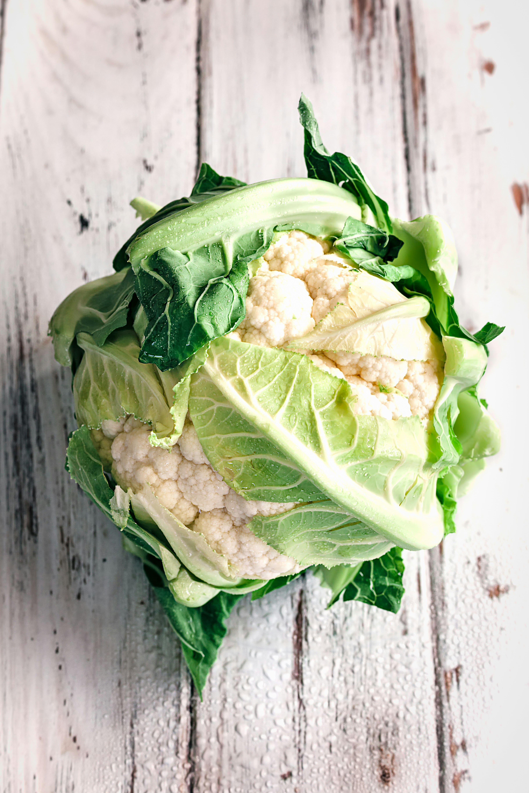
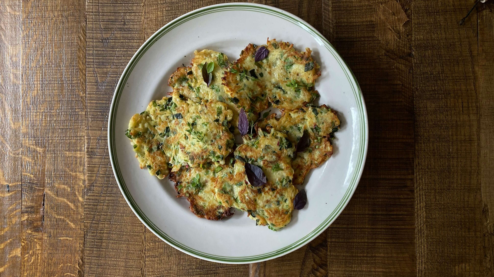
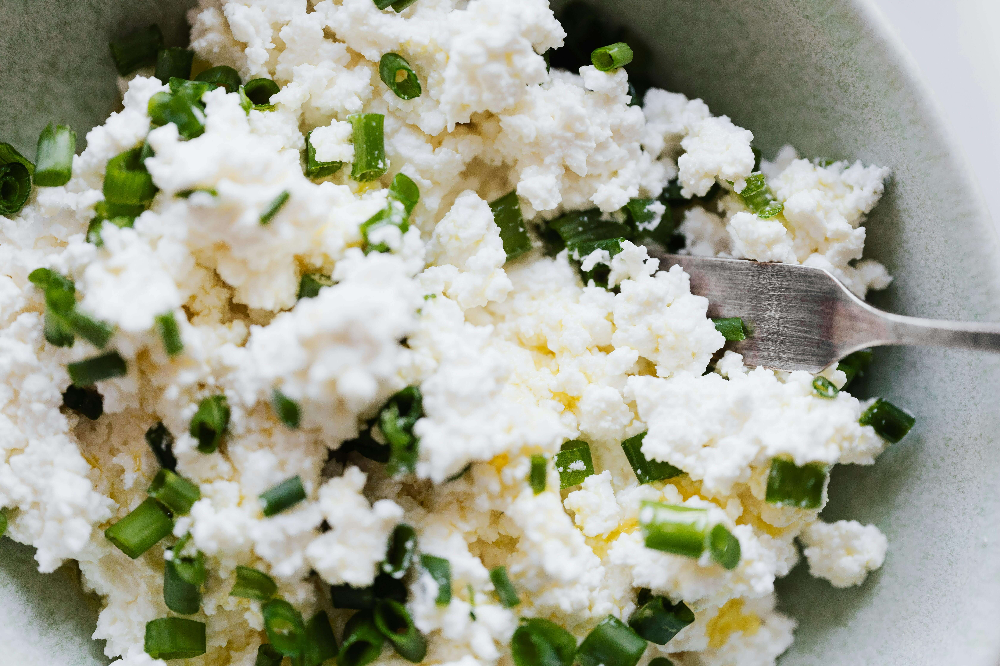

Składniki
- 2 jajka
- 1/2 puszki krojonych pomidorów (ok. 200 g) lub 2 dojrzałe świeże pomidory
- 1/4 średniej cebuli
- 1/4 papryki (np. czerwonej)
- 1 ząbek czosnku
- 1 łyżeczka oliwy z oliwek
- Przprawy dla smaku (u mnie: sól, pieprz, kumin)
Przygotowanie
- Na patelni rozgrzej oliwę, dodaj drobno posiekaną cebulę i podsmaż do zeszklenia.
- Dorzuć pokrojoną w kostkę paprykę i smaż kilka minut, aż zmięknie.
- Dodaj przeciśnięty czosnek, przyprawy i wymieszaj.
- Wlej pomidory, dopraw solą i pieprzem, gotuj na średnim ogniu ok. 10 minut, aż sos lekko zgęstnieje.
- Zrób łyżką 2 zagłębienia w sosie i wbij w nie jajka.
- Przykryj patelnię pokrywką i gotuj kilka minut, aż białka się zetną, a żółtka pozostaną płynne (lub dłużej, jeśli wolisz jajka bardziej ścięte).
- Podawaj posypane natką pietruszki lub kolendrą, z pieczywem (np. pita, chleb pełnoziarnisty).
Zobacz też:

Steki z kalafiora

Placki z cukinii

Twarożek